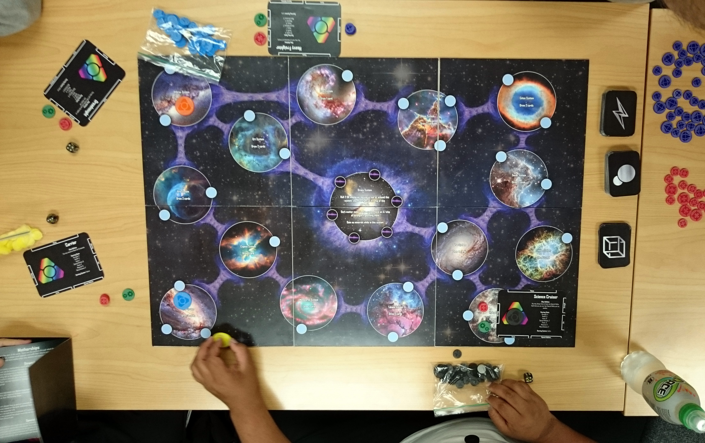
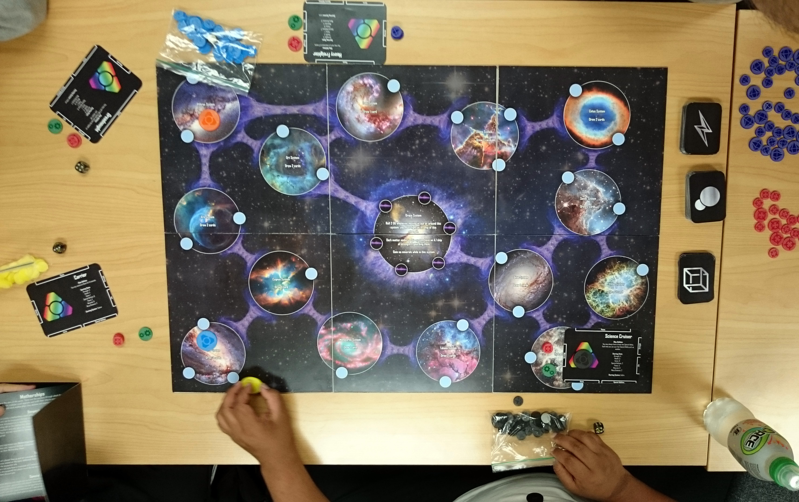

3D pathfinding system for Unity using the A* algorithm. Supports full 3D movment and Areas of lower pathing preference.
Download

Controllable interactive shader. Includes distortion effect on objects inside, dissolve effects, and glow on geometry intersecting the forcefield.
Download
 

This is a prototype board game that was inspired by the games Risk and Talisman. It was made by hand, the board is is made from thick cardboard and paper, the tokens are made from laser cut plastics and the cards are made with a thick glossy paper.